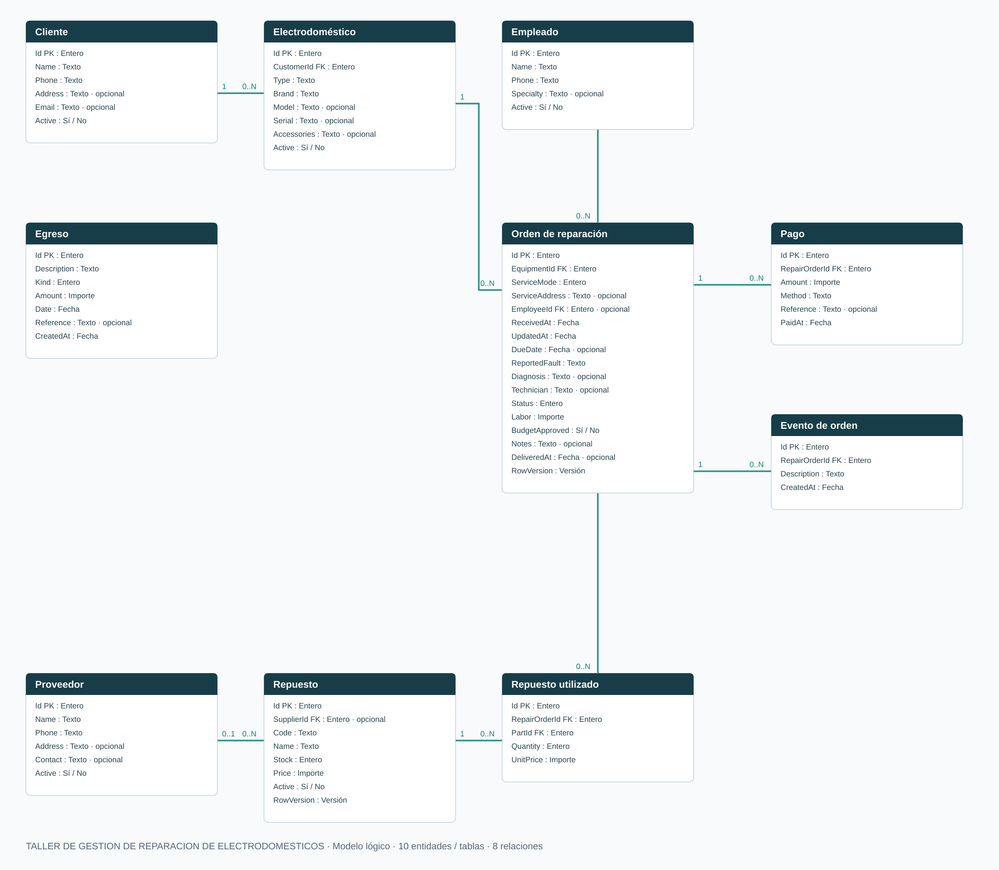
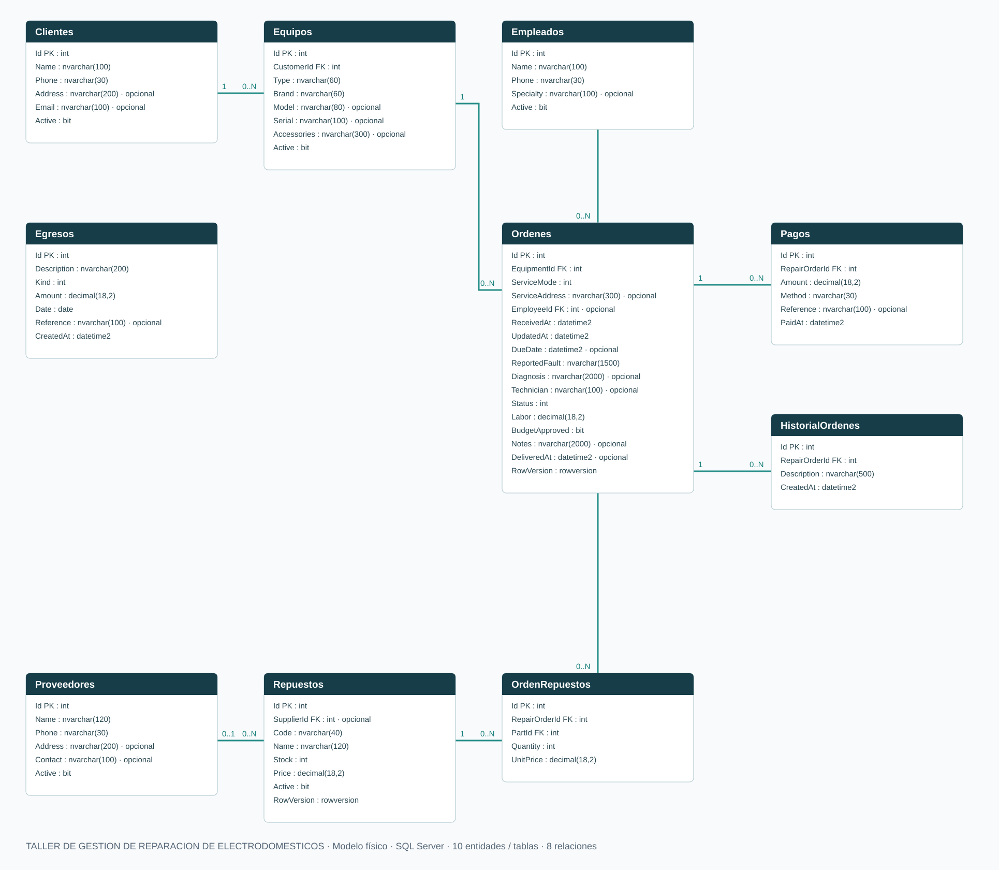

TALLER DE GESTION DE REPARACION DE ELECTRODOMESTICOS
Gestión local de un negocio pequeño: clientes, empleados, proveedores, piezas y arreglos en taller o a domicilio.
Aplicación y arquitectura
C# / .NET 9 · ASP.NET Core MVC · Razor · Entity Framework Core · SQL Server · Bootstrap local · YARP.
TallerElectrodomesticos
La aplicación contiene controladores, servicios con reglas de negocio, modelos de datos y vistas. El navegador utiliza la aplicación; no accede directamente a SQL Server. Oracle Data Modeler se utiliza exclusivamente para documentación.
Proceso de una reparación
- Registrar cliente y equipo.
- Crear la orden y seleccionar taller o domicilio; a domicilio requiere dirección.
- Asignar empleado, diagnosticar y preparar presupuesto con mano de obra y piezas.
- Registrar aprobación, reparar y cobrar anticipos / saldo.
- Marcar reparado, entregar con saldo cero e imprimir comprobante.
Las operaciones mantienen historial. Las piezas se descuentan en transacciones y las cancelaciones restituyen stock. Los pagos no pueden superar el saldo, incluso con operaciones concurrentes.
Modelo lógico
Nueve entidades y ocho relaciones. Todas las relaciones se conservaron; los recorridos se distribuyeron sin cruces.
Abrir diagrama a tamaño completo
Modelo físico de SQL Server
Claves primarias, referencias, tipos SQL y campos opcionales. El diseño nativo de Data Modeler incluye la representación relacional y el perfil físico de SQL Server.
Abrir diagrama a tamaño completo
RowVersion es rowversion en SQL Server; el importador SQL Server 2012 de Data Modeler lo representa como binary(8), solo para documentación. Empleado asignado y proveedor de pieza son referencias opcionales.
Tablas del proyecto
| Tabla | Columnas |
|---|---|
| Clientes | 6 |
| Empleados | 5 |
| Proveedores | 6 |
| Equipos | 8 |
| Repuestos | 8 |
| Ordenes | 17 |
| HistorialOrdenes | 4 |
| OrdenRepuestos | 5 |
| Pagos | 6 |
Diccionario completo: DiccionarioDatos.md. Diseño editable: TallerElectrodomesticos.dmd; mantener su carpeta compañera.
Uso local, código y respaldo
Hacer doble clic en el acceso del escritorio, o en Iniciar.cmd. La aplicación abre http://127.0.0.1:7180. La solución TallerElectrodomesticos.sln incluye código, documentación y scripts. El historial está registrado en Git local.
El iniciador usa ejecutables con runtime incluido. SQL Server debe estar activo. La versión es para una PC de confianza y se limita a loopback; no dispone de login / roles ni de exposición por internet.
Crear respaldo con scripts/Respaldo.ps1: SQL Server lo verifica con CHECKSUM y lo guarda en backups. Los pagos son registros internos; no se realizan transferencias ni se emiten facturas fiscales.
Verificación entregada
Compilación sin errores ni advertencias; pruebas de integración SQL Server; recorrido HTTP de clientes, empleados, proveedores, piezas, domicilio, cobros y entrega; lectura nativa del modelo con bibliotecas de Oracle y verificación geométrica sin cruces.